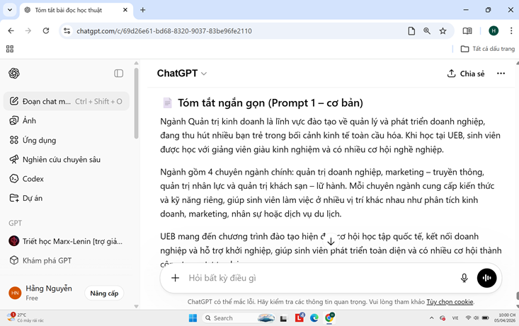
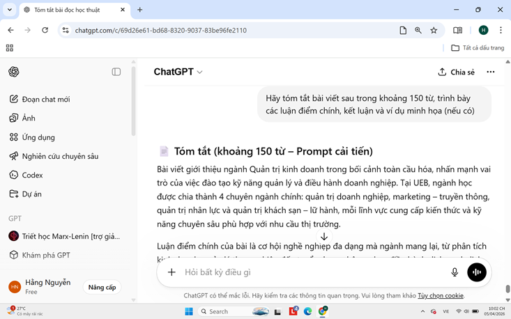
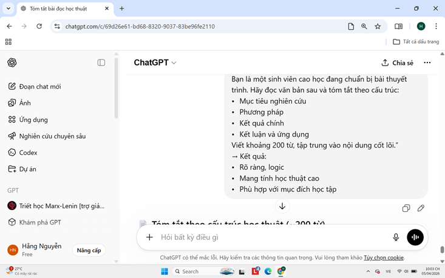

Áp dụng các kỹ thuật prompt nâng cao để điều hướng AI giải quyết vấn đề chuyên sâu, biến câu lệnh thành một bản thiết kế tư duy hoàn chỉnh.
Câu hỏi: "Tóm tắt đoạn văn sau đơn giản ngắn gọn."
Kết quả: Nội dung chung chung, thiếu trọng tâm.

Câu hỏi: "Hãy tóm tắt bài viết sau trong khoảng 150 từ, trình bày các luận điểm chính, kết luận và ví dụ minh họa (nếu có)."
Kết quả: Có cấu trúc rõ hơn nhưng vẫn thiếu một số ý quan trọng.

Câu hỏi: "Bạn là một sinh viên cao học đang chuẩn bị bài thuyết trình. Hãy đọc văn bản sau và tóm tắt theo cấu trúc: 1. Mục tiêu nghiên cứu, 2. Phương pháp, 3. Kết quả chính, 4. Kết luận và ứng dụng. Viết khoảng 200 từ, tập trung vào nội dung cốt lõi."
Kết quả: Rõ ràng, logic, mang tính học thuật cao và cực kỳ phù hợp với mục đích học tập.

| Tiêu chí | Cơ bản | Cải tiến | Nâng cao |
|---|---|---|---|
| Độ rõ ràng | Thấp | Trung bình | Cao |
| Cấu trúc | Không có | Có | Rất rõ |
| Tính học thuật | Thấp | Trung bình | Cao |
| Tính ứng dụng | Thấp | Khá | Rất cao |
Việc áp dụng kỹ thuật Role Prompting (gán vai trò) và Constraints (đặt ràng buộc) giúp thu hẹp không gian xác suất của AI, từ đó ép mô hình ngôn ngữ lớn (LLMs) sinh ra câu trả lời chuyên sâu, đúng trọng tâm và phù hợp hoàn toàn với đối tượng mục tiêu.